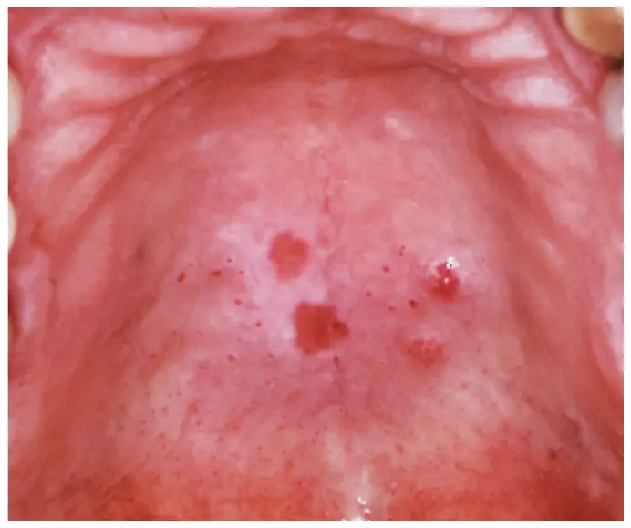
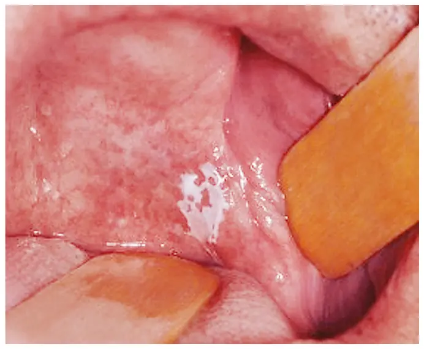

نسخه استخراجشده؛ ترجمه یا تأیید علمی انجام نشده است. وضعیت: captured
خانم ۳۰ سالهای در فرم شرح حال نوشته «سیگاری نیستم»، اما لثهاش رنگدانهی قهوهای دارد. وقتی میپرسی، میگوید آخر هفتهها قلیان میکشد و گاهی ویپ. آیا مصرفکنندهی دخانیات است؟

بله. بهجای «سیگار میکشی؟» بپرس هر نوع دخانیاتی مصرف میکند یا نه: سیگار، قلیان، پیپ، ناس یا سیگار الکترونیکی.
قلیان جایگزین بیخطر سیگار نیست؛ دودش هم نیکوتین، مونوکسید کربن و مواد سرطانزا دارد و آب کوزه پاکش نمیکند. بیشتر سیگارهای الکترونیکی هم نیکوتین دارند و بعضی پادها به اندازهی یک پاکت سیگار. آئروسل آنها ذرات بسیار ریز و فلزاتی مثل نیکل و سرب دارد. مغز نوجوان به نیکوتین حساستر است.
دندانپزشک بیمار را بارها میبیند و اثر دخانیات را در دهانش نشانش میدهد؛ جای خوبی برای شروع ترک است.

اگر بیمار علاقه ندارد، اصرار و سرزنش نکن؛ فواید ترک را بگو و بگو هر وقت آماده بود کمکش میکنی. بیشتر سیگاریها پیش از موفقیت چند بار شکست میخورند.
داروها: NRT به شکل چسب، آدامس، قرص مکیدنی، اسپری بینی و اینهیلر است. آدامس را کمی بجو و بعد در وستیبول «پارک» کن؛ ۱۵ دقیقه پیش و حین آن چیزی نخور. بوپروپیون در سابقهی تشنج منع دارد و خشکی دهان میدهد. وارنیکلین از یک هفته پیش از روز ترک شروع میشود و ممکن است تهوع و تغییر خلق، حتی افسردگی، بدهد.